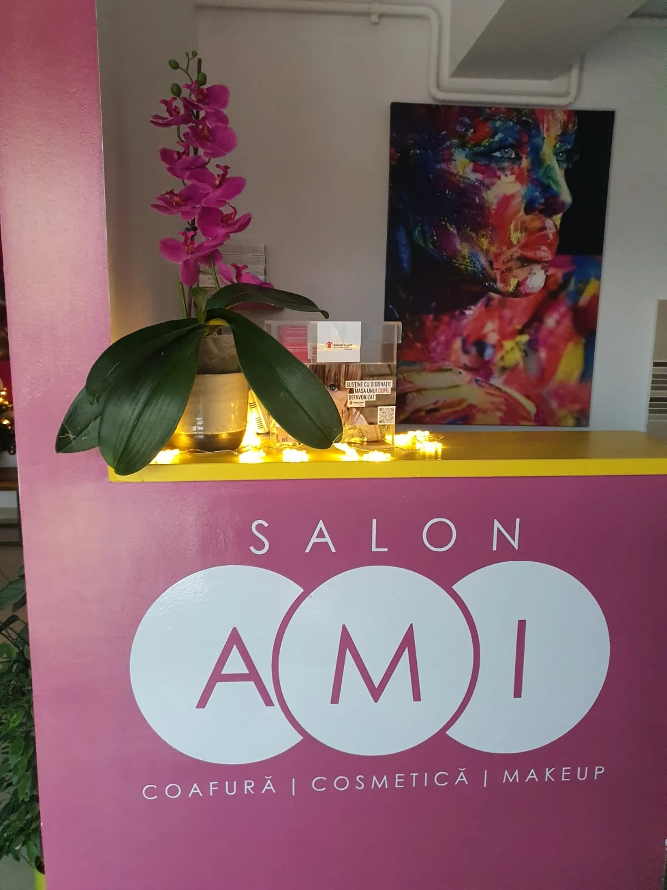
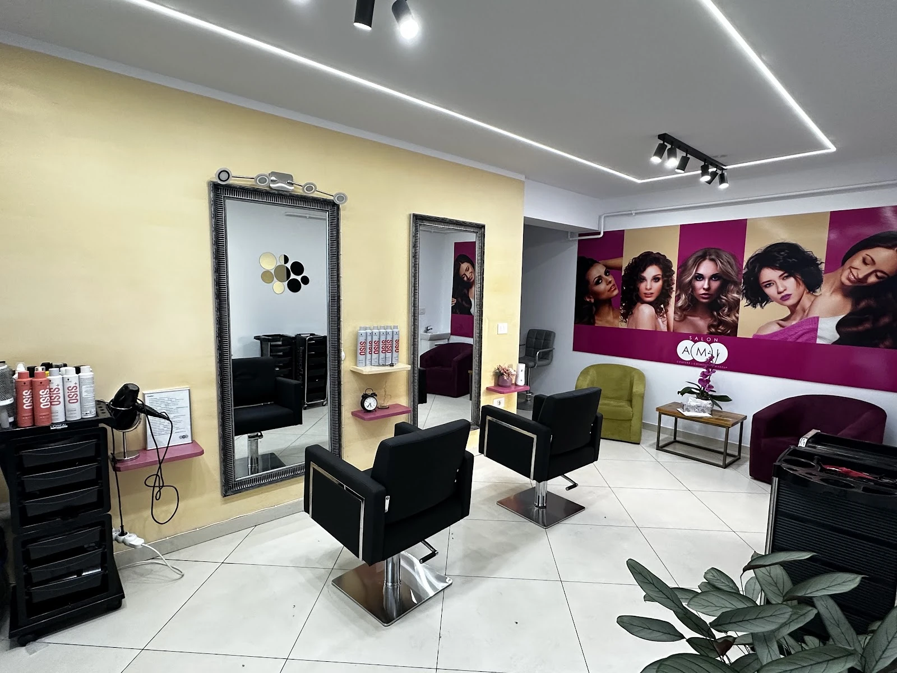
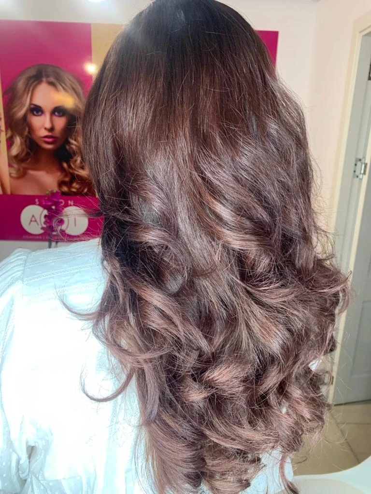
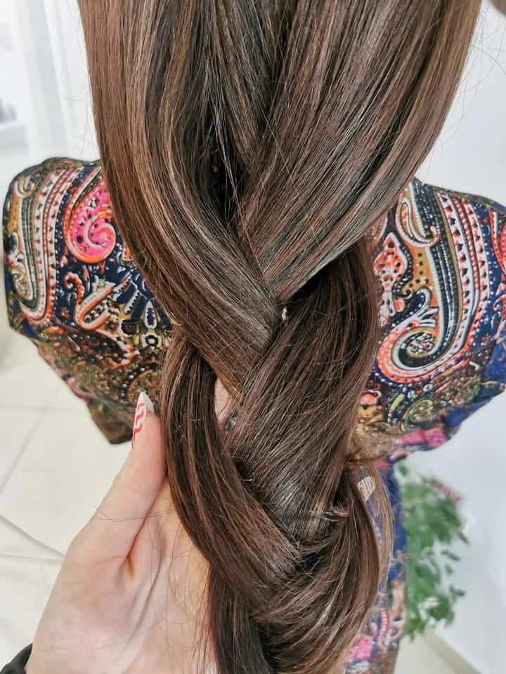
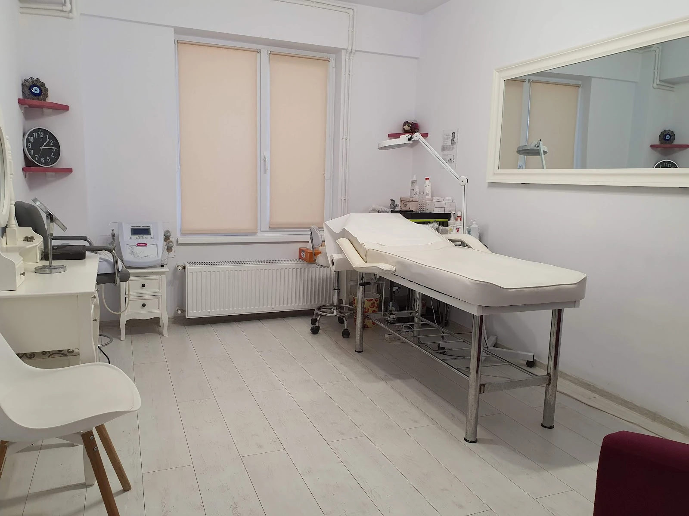
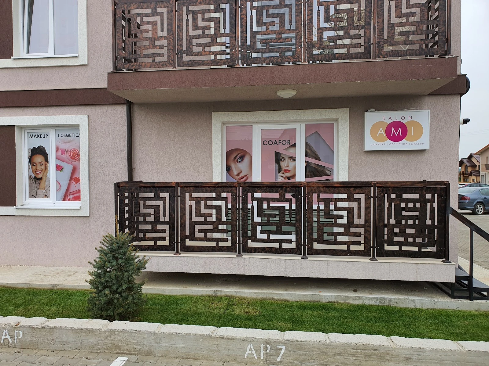

{{Salon de înfrumusețare · Strada Gheorghe Asachi|Beauty salon · Strada Gheorghe Asachi|Salão de beleza · Strada Gheorghe Asachi}}
{{Fir cu fir,|Strand by strand,|Fio a fio,}}{{la AMI.|at AMI.|no AMI.}}
{{Salonul din Valea Lupului cu 4,9 pe Google. Alegi serviciul, ziua și ora aici, iar cererea pleacă direct la salon, pe WhatsApp sau SMS. Sau ne suni, simplu.|The Valea Lupului salon rated 4.9 on Google. Pick the service, day and time here and your request goes straight to the salon by WhatsApp or text. Or just give us a call.|O salão de Valea Lupului com 4,9 no Google. Escolhe o serviço, o dia e a hora aqui e o pedido segue direto para o salão, por WhatsApp ou SMS. Ou ligue, simplesmente.}}
4,9{{81 de recenzii pe Google|81 reviews on Google|81 avaliações no Google}}

{{Servicii|Services|Serviços}}
{{Ce faci la AMI|What you come to AMI for|O que fazer no AMI}}
{{Pe firma de la intrare scrie simplu: coafură, cosmetică, makeup. Durata și prețul ți le confirmă salonul, pentru tine, nu pentru o medie.|The sign at the door says it plainly: hair, cosmetics, make-up. The salon confirms time and price for you, not for an average.|O letreiro à entrada diz tudo: cabelo, cosmética, maquilhagem. O salão confirma a duração e o preço para si, não para uma média.}}
{{Coafură|Hair|Cabeleireiro}}
{{Alege →|Choose →|Escolher →}}{{Tuns, vopsit, coafat. Formă nouă sau doar vârfurile, culoare nouă sau doar rădăcinile, bucle pentru o seară.|Cuts, colour, styling. A new shape or just the ends, a new colour or just the roots, curls for an evening.|Corte, coloração, penteado. Forma nova ou só as pontas, cor nova ou só as raízes, caracóis para uma noite.}}
{{Cosmetică|Cosmetics|Cosmética}}
{{Alege →|Choose →|Escolher →}}{{Cabinet separat, luminos, cu pat de tratament. Spui ce îți dorești pentru ten, salonul îți spune ce se potrivește.|A separate, bright room with a treatment bed. Say what you want for your skin; the salon tells you what suits it.|Sala própria, luminosa, com marquesa. Diga o que quer para a pele; o salão diz-lhe o que se adequa.}}
{{Machiaj|Make-up|Maquilhagem}}
{{Alege →|Choose →|Escolher →}}{{Pentru o zi obișnuită sau pentru eveniment. Spune-ne unde mergi.|For an ordinary day or an event. Tell us where you’re going.|Para um dia normal ou para um evento. Diga-nos onde vai.}}
{{prețuri și durată: de confirmat|prices and duration: to be confirmed|preços e duração: a confirmar}}{{Alt serviciu? Îl scrii în programare.|Something else? Write it in the booking.|Outro serviço? Escreva-o na marcação.}}
{{Programare|Booking|Marcação}}
{{Trei alegeri și gata.|Three choices and done.|Três escolhas e pronto.}}
{{Serviciul, ziua, ora. Cererea pleacă scrisă, cu tot ce trebuie, iar salonul îți răspunde cu confirmarea.|Service, day, time. Your request goes out fully written and the salon replies to confirm.|Serviço, dia, hora. O pedido segue já escrito e o salão responde a confirmar.}}
{{Preferi vocea?|Prefer to talk?|Prefere falar?}}
0754 811 814{{Joi: 09:00–20:00. Programul celorlalte zile îl confirmă salonul.|Thursday: 9:00–20:00. The salon confirms the other days.|Quinta: 09:00–20:00. O salão confirma os restantes dias.}} {{de confirmat|to be confirmed|a confirmar}}
{{Salonul|The salon|O salão}}
{{Pe Asachi, între case.|On Asachi, among the houses.|Na Asachi, entre as casas.}}
{{AMI este o afacere condusă de o femeie, în Valea Lupului, la câțiva pași de Iași.|AMI is a woman-owned business in Valea Lupului, a few steps from Iași.|O AMI é um negócio liderado por uma mulher, em Valea Lupului, a dois passos de Iași.}}





4,9{{din 5 · Google|out of 5 · Google|em 5 · Google}}
{{Recenzii|Reviews|Avaliações}}
{{81 de clienți au lăsat o notă.|81 clients left a rating.|81 clientes deixaram uma nota.}}
{{Media lor este 4,9 din 5. Le citești pe toate pe Google Maps, cu numele celor care le-au scris.|Their average is 4.9 out of 5. Read them all on Google Maps, signed by the people who wrote them.|A média é 4,9 em 5. Leia-as todas no Google Maps, assinadas por quem as escreveu.}}
{{Citește recenziile pe Google|Read the reviews on Google|Ler as avaliações no Google}}{{Contact|Contact|Contactos}}
{{Unde ne găsești.|Where to find us.|Onde nos encontrar.}}
- Strada Gheorghe Asachi707410 Valea Lupului, Iași
Plus Code: 5GM7+PV - 0754 811 814{{Sună sau scrie pentru programare.|Call or text to book.|Ligue ou escreva para marcar.}}
- {{Joi 09:00–20:00|Thursday 9:00–20:00|Quinta 09:00–20:00}}{{Celelalte zile:|Other days:|Restantes dias:}} {{de confirmat|to be confirmed|a confirmar}}
- facebook.com/AMIsalonn{{Noutăți și lucrări recente.|News and recent work.|Novidades e trabalhos recentes.}}